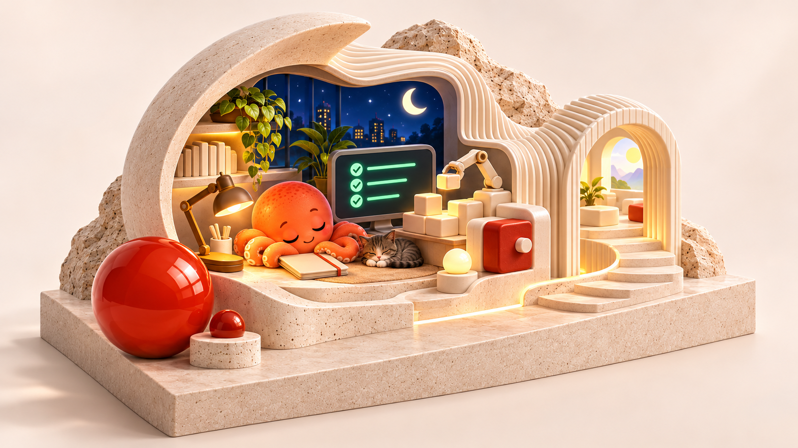
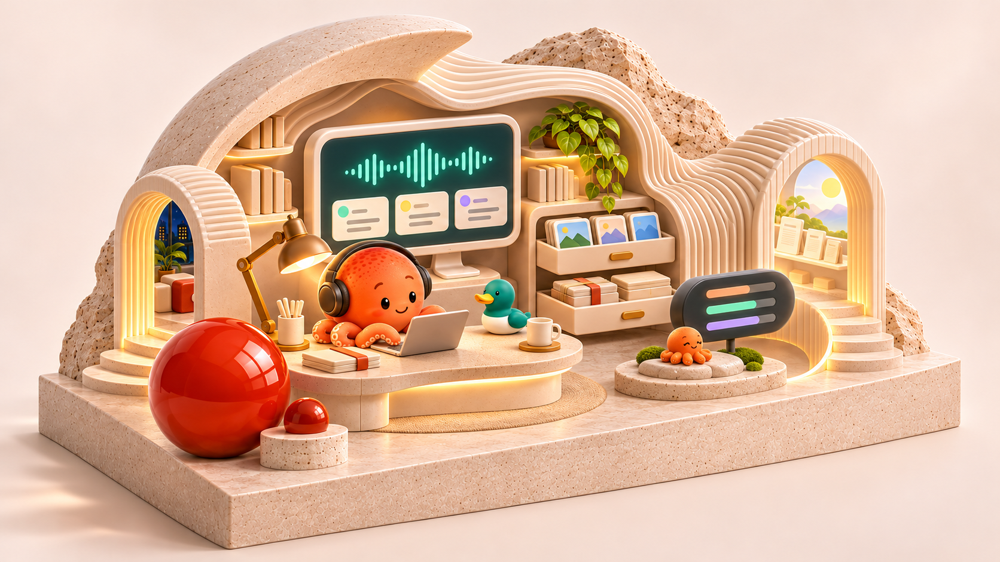
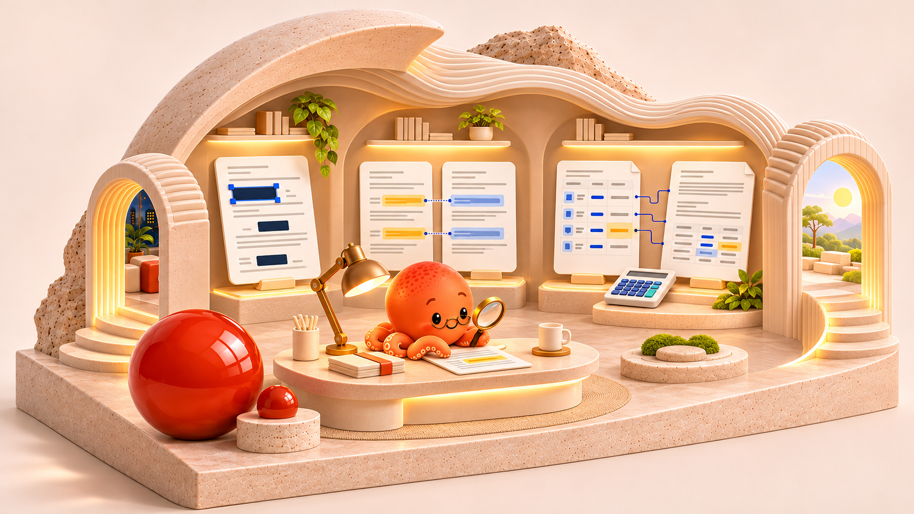

A LITTLE MORE TIME FOR YOU.
走進工具的日常，
把時間留給自己。
八件源自真實需求的作品，三個關於時間的展間。從夜晚到日常，讓工具接手重複，把選擇留給你。
開始逛展 ↓互動樣板 · 圖片運鏡，非連續實拍影片


你的下一個好工具，
也許就在這裡。
回到產品百貨，依照你的需要慢慢挑選。
查看所有產品 ↗回到展覽開頭 ↑八件源自真實需求的作品，三個關於時間的展間。從夜晚到日常，讓工具接手重複，把選擇留給你。
開始逛展 ↓互動樣板 · 圖片運鏡，非連續實拍影片


回到產品百貨，依照你的需要慢慢挑選。
查看所有產品 ↗回到展覽開頭 ↑